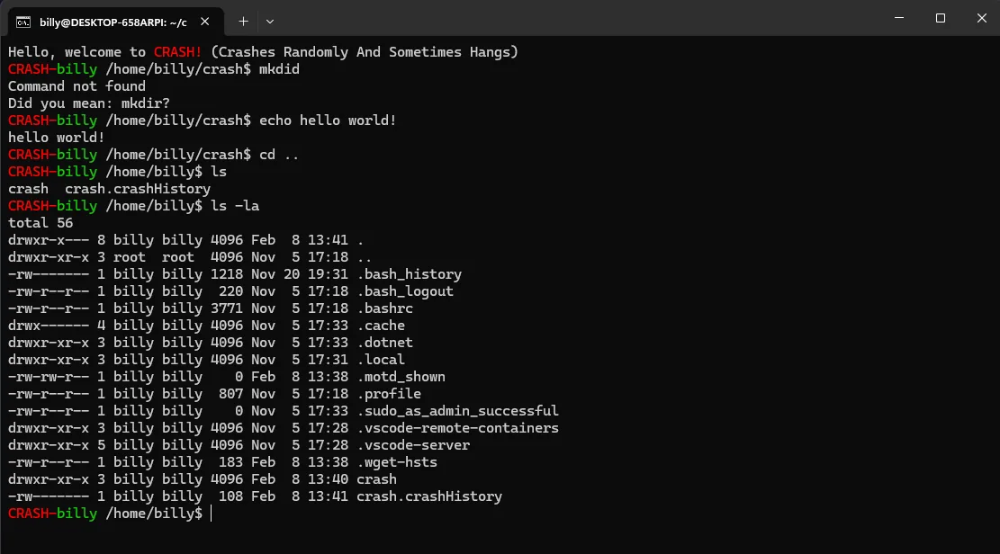

CRASH
Custom Linux Shell | Operating Systems Final Project
CRASH (Crashes Randomly and Sometimes Hangs) is a custom Linux shell written in C++ that mirrors many of bash's core behaviors.
Project Overview
CRASH is a shell I built as my final project for Operating Systems. It's written in C++ for a Linux environment and implements the GNU Readline library for input handling.
The shell executes commands, manages background processes, keeps command history, runs startup scripts, and even suggests the closest valid command when one isn't found.
Features:
- Interactive Linux Shell prompt with current user and current working directory.
- Executes programs using PATH lookup and recursive file searching.
- Command suggestion using Levenshtein Distance.
- Supports:
- Background processes with: &
- Sequential commands with: ;
- Change Directory with: cd
- Script execution with: .(filename)
- Environment Variable expansion and assignment.
- Full implementation of GNU Readline.
- Startup config with .crash script.
- Signal handling to terminate processes.
Shell Showcase

Crash Screenshot
This shows some of the basic features of CRASH.